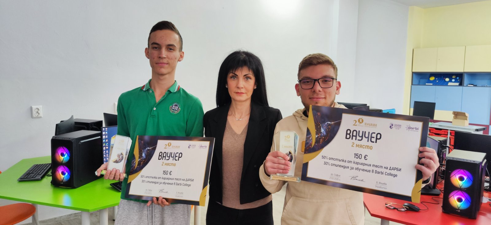

Новини
Национално отличие за ученици от СУ Йордан Йовков" – Сливен
Даниел Константинов и Венцислав Колев от СУ „Йордан Йовков“ – Сливен завоюваха второ място в националния конкурс „Аз и изкуственият интелект след 10 години“.
Научи повече